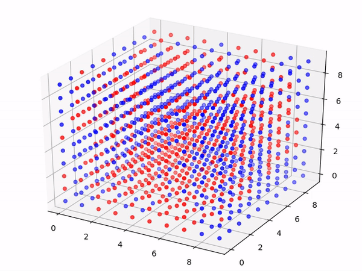
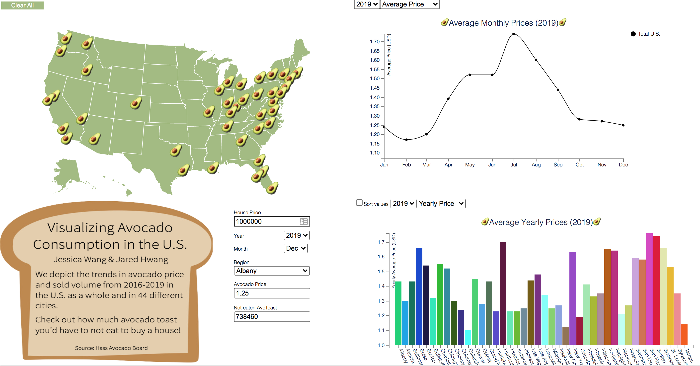

2D/3D Ising Model Simulator, Tufts University
The Ising model is an example of a thermodynamic system, and it is particularly helpful for understanding phase transitions. In our case,
we used it to understand the behavior of magnets under varying temperatures. We implemented an Ising Model simulator in two and three dimensions,
and included tools to change temperature, size, etc. to observe the effect on magnet behavior. More information about the Ising Model can be read here.

2D Simulation run under the transition temperature. Note the steady magnetization.

3D Simulation run under the transition temperature. Note the steady magnetization.
Avocado Consumption Data Visualization, Tufts University
Using data sourced from the Hass Avocado Board, we created an interactive visualization
showing avocado consumption and price data in 45 cities across the United States, allowing the user to compare different cities with
each other and the national average. Also, since people are always telling us millennials that eating avocado toast is the reason we
can't afford things like houses with lawns and cars, we added a calculator to let you see how much avocado toast you'd have to not
eat to buy a house! Check out the visualization here.

.
Visualization displaying avocado consumption data. Check out the full vis
here.
Tweetalyzer, Tufts University
Tweetalyzer was a website that would scrape tweets from a few celebrities, including Donald Trump and local celebrity Security Professor Ming Chow and
generate fake tweets in their style. We developed the neural net using Python Keras, and the web API using Flask. Unfortunately, the code is deprecated so
the website can't be run anymore, but the code can be found here.

{kind=link}